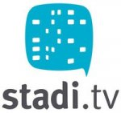

Videon verkkojulkaisuun on tarjolla on useita palveluita. Tässä oppaassa keskitytään ilmaisiin palveluihin, jotka soveltuvat ei-kaupalliseen, avoimen tuotannon ympäristöön. Ohjeet videon julkaisemiseen näissä palveluissa löydät luvusta 10.
Vimeon löydät osoitteesta http://vimeo.com/
Vimeo on Internetissä toimiva videopalvelu, joka avattiin 2005. Sivuston ensi kehittäjinä olivat elokuvan ja videon tekijät ja se tukee mm. videoiden näyttämistä muilla verkkosivuilla sekä pitkäaikaista videovarastointia. Videoiden katsominen ja käyttäjäksi rekisteröityminen on ilmaista. Rekisteröityneet käyttäjät voivat lisätä sivustolle omia videoitaan, kirjoittaa videoiden yhteyteen kommentteja sekä liittää profiiliinsa käyttäjäkuvan.
Vimeo alkoi tukea HD-laatuista videota jo 2007. Vimeo ei salli kaupallisten videoiden, pelitallenteiden tai pornon esittämistä. Vimeoon ei myöskään saa ladata muuta kuin tekijän itsensä tuottamaa sisältöä.
Toisin kuin eräistä kilpailevista palveluista, Vimeosta on mahdollista ladata videotiedosto tietokoneelle ilman lisäohjelmia, kunhan videon lisääjä ei ole asetuksia muokkaamalla estänyt tallentamista. Peruskäyttäjien lisäämät videot ovat saatavilla alkuperäisessä muodossaan viikon ajan, minkä jälkeen vain pakattu versio on tallennettavissa.
WordPressin löydät osoitteesta http://wordpress.org/ ja suomenkielistä tietoa sivustolta http://fi.wordpress.org/
WordPress on sisällönhallintajärjestelmä (englanniksi "Content Management System" tai "CMS") ja bloggaustyökalu, joka avattiin käyttäjille 2003.
On kaksi tapaa, joilla voit ottaa WordPressin käyttöön:
Ensimmäinen vaihtoehto on helpompi. WordPress ylläpitää omaa verkkosivustoaan, joka tarjoaa ilmaisia bloggaustilejä ja nykyisin jopa 3GB varastotilaa mediatiedostoillesi. Voit luoda oman tunnuksen WordPress.com-sivustolla:
Jos tahdot muutella WordPressin asetuksia, voit valita toisen vaihtoehdon ja asentaa WordPressin itse palvelimelle, jolloin tarvitset palvelintilaa. WordPressin lataus onnistuu lataussivulla:
http://wordpress.org/download/
Tätä toista vaihtoehtoa ei suositella, mikäli sinulla ei ole kokemusta ohjelmien asentamisesta palvelimelle tai mikäli sinulla ei ole käytössäsi budjettia jonkin yrityksen toimeksiantamiseksi oman Wordpress-asennuksen ylläpitämiseksi.
Toinen vaihtoehto vaatii myös PHP:n ja mySQL:n asentamista palvelimellesi.

Stadi.TV on osoitteessa: http://stadi.tv/
Stadi.TV on Forum Virium Helsingin, Helsingin kaupungin, ammattikorkeakoulu Arcadan ja Mediakulttuuriyhdistys m-cultin kehittämä yhteisöllinen televisiopalvelu helsinkiläisiltä helsinkiläisille. Loppuvuodesta 2010 auennutta Stadi.TV-palvelua kehitetään monikanavaisena sisältäen verkko-, kaapeli- ja mobiilijakelun. Stadi.tv:ssä voit perustaa itsellesi tai edustamallesi yhteisölle oman kanavan tai lisätä yksittäisiä ohjelmia.
There has been error in communication with Booktype server. Not sure right now where is the problem.
You should refresh this page.